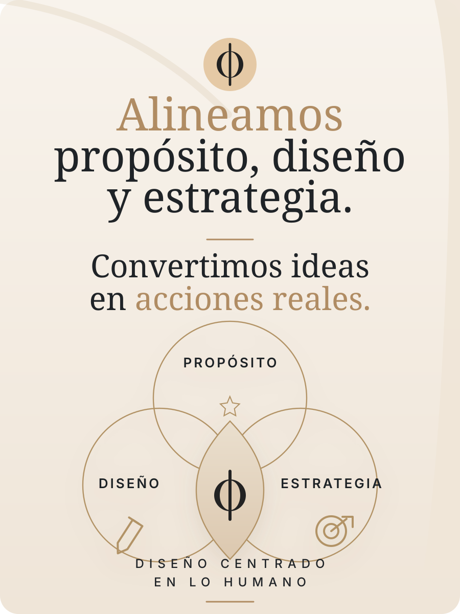

Identidad de marca
Naming, tono de voz, universo visual, lineamientos y sistemas gráficos flexibles.
Branding & Experiencias
Transformamos ideas en experiencias, marcas en vínculos y clientes en comunidades.
Nosotros
Diseñamos marcas que no solo se ven bien: se sienten claras, cercanas y memorables. Acompañamos a empresas, emprendedores y comunidades a encontrar una voz auténtica, una presencia coherente y experiencias que generen vínculo.
Qué hacemos
Convertimos ideas en acciones reales para que tu marca comunique con intención y conecte con profundidad.
Naming, tono de voz, universo visual, lineamientos y sistemas gráficos flexibles.
Propósito, posicionamiento, narrativa, diferenciadores y mapa de audiencias.
Diseño de momentos, activaciones, rituales, lanzamientos y espacios memorables.
Estrategias para convertir clientes en comunidad y marcas en relaciones sostenibles.
Método
Nosotros cambiamos eso combinando sensibilidad, claridad estratégica y una ejecución visual con intención.

Proceso
Entendemos la historia, el contexto, los objetivos y las personas detrás de la marca.
Ordenamos propósito, estrategia, mensaje y oportunidades de conexión.
Creamos un universo visual y verbal coherente, sensible y accionable.
Llevamos la marca a piezas, experiencias, campañas y puntos de contacto reales.
No buscamos que una marca solo sea vista. Buscamos que sea recordada, sentida y compartida.
Contacto
Cuéntanos qué estás construyendo y diseñemos juntos una experiencia con propósito.
WhatsApp oficial: +57 312 3788524